¿Qué es la Isla de Margarita?
La Isla de Margarita está ubicada en el mar Caribe. Junto a las islas de Coche y Cubagua, constituye el único estado insular de Venezuela, denominado «Nueva Esparta«. La isla jugó un papel importante de la historia de la independencia de Venezuela. Luego de ello, Margarita se centró en el comercio, que se desarrolló con la ayuda de los viajantes extranjeros procedentes en su mayoría de España y los habitantes de la isla.
Geopolitica de la Isla de Margarita (Nueva Esparta[solo municipios])
-
Península de Macanao
Península de Macanao o simplemente Macanao es uno de los 11 municipios del estado Nueva Esparta. Está ubicado en el oeste, al sur-occidente de la Isla de Margarita en el Estado Nueva Esparta, Venezuela, limitando con el municipio Tubores y el mar Caribe. La capital es: Boca de Río.
-
Tubores
Tubores es uno de los 11 municipios que componen el estado Nueva Esparta. Está integrado por dos secciones, una parte se encuentra en el centro de la Isla de Margarita separado por el Mar Caribe del otro sector que abarca la totalidad de la Isla de Cubagua. La principal actividad económica es la portuaria, la pesca, turismo y cultivos de: ají, tomate, auyama, plátano, pimentón, lechosa y parchita. La capital es: Punta de Piedra.
-
Antonio Diaz
El Municipio Antonio Díaz es uno de los once municipios que conforman el estado Nueva Esparta. Está ubicado en el centro-este de la isla de Margarita, en el estado Nueva Esparta de Venezuela. Posee una superficie total de 165,9 km² y para el año 2023 contaba con una población de 81 466 habitantes. Su capital, es el pueblo de San Juan Bautista ubicado en el valle que lleva el mismo nombre.
-
Garcia
García o José María García es un municipio situado en la parte oriental de la Isla de Margarita, limita con el Mar Caribe y con los municipios Arismendi, Mariño y Díaz, en Venezuela. La capital es: Valle del Espìritu Santo.
-
Mariño
Mariño es uno de los 11 municipios del estado Nueva Esparta. Está ubicado al este de la isla de Margarita y tiene una superficie de 39 km² y una población de 140.504 habitantes (INE 2023). Su capital es Porlamar, la principal ciudad comercial del estado. Su puerto es la amplia bahía de Guaraguao, protegida de los vientos del NE por el cabo El Morro. Atraviesa la localidad el río El Valle, de escasas aguas durante gran parte del año. La temperatura media es de 27 °C con extremas de 37 y 18,5 °C. Las precipitaciones medias anuales son de 512 mm. la capital es: Porlamar.
-
Maneiro
Maneiro es uno de los 11 municipios que conforman el estado Nueva Esparta. Está ubicado al este de la Isla de Margarita en el Estado Nueva Esparta, Maneiro tiene una superficie de 35,9 km² y una población de 70 742 habitantes (censo 2023). Su capital es: Pampatar la principal ciudad del Estado Nueva Esparta.
-
Arismendi
Arismendi es un de los 11 municipios que conforman el estado Nueva Esparta y recibió este nombre en honor al prócer Juan Bautista Arismendi. Se encuentra ubicado al este de la Isla de Margarita. Tiene una superficie de 20,7 km² y Según el censo del año 2023 tiene 33.309 habitantes. Su capital es: La Asunción, la cual además de ser la capital del municipio lo es también del estado Nueva Esparta.
-
Antolín del Campo
Antolín del Campo es uno de los 11 municipios del estado Nueva Esparta, ubicado en la Isla de Margarita en la costa del Mar Caribe de Venezuela. Limita con el Mar Caribe y el Municipio Gomez. Su capital es: Plaza Paraguachi
-
Gomez
Gómez o Francisco Esteban Gómez es un municipio ubicado al noreste de la Isla de Margarita en el Estado Nueva Esparta, Venezuela. Tiene una superficie de 97,79 km² y una población de 45.409 habitantes (censo 2001). Su capital es Santa Ana, el municipio está dividido en 5 parroquias, Bolívar, Guevara, Matasiete, Santa Ana y Sucre. El turismo, la artesanía y el comercio son las principales actividades económicas del municipio.
-
Marcano
Marcano es uno de los 11 municipios que integran el estado Nueva Esparta y está ubicado al norte de la Isla de Margarita. Tiene una población de 42.469 habitantes (censo 2001) un 7,6% del total de habitantes del estado. Su capital Juan Griego,[4] es el poblado más septentrional de Venezuela.
La vida comercial del municipio es muy activa por la existencia del decreto de "Puerto Libre", el turismo y la posición de Juan Griego como segundo puerto del estado Nueva Esparta. Tiene una superficie de 43 km².
Otros centros poblados que conforman este municipio, son los pueblos y caseríos tales como; Los Millanes, Las Cabreras, Pedregales, Vicuña, entre otros.
-
Villalba
Villalba es uno de los 11 municipios que componen el estado Nueva Esparta. Se encuentra ubicado al sur de la entidad, en la Isla de Coche. es el único municipio en Venezuela, que comprende la totalidad de una isla. Tiene una superficie de 55 km² y una población de 9.986 habitantes (proyección del INE para el 2010). Tiene por capital el pueblo de San Pedro de Coche. Está dividido en dos parroquias, Vicente Fuentes y San Pedro de Coche.
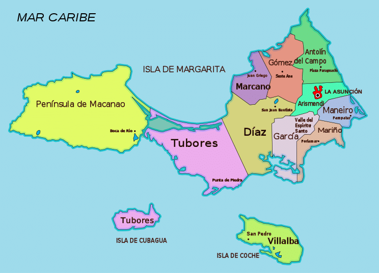
La Geografia de la Isla de Margarita(Estado de Nueva Esparta)
Nueva Esparta se encuentra localizada entre las coordenadas 10º44, 11º10` de latitud Norte y 63º(grados)46`(minutos), 64º13` de longitud Oeste, en la región insular del país.
La entidad se encuentra limitada en todos sus puntos cardinales por el Mar Caribe.
En conjunto, las tres islas de la entidad reúnen magníficas playas, maravillosos manglares y otros paisajes que la hacen un verdadero paraíso insular. Margarita, la mayor de ellas, presenta una elevación máxima en el Cerro Copey (900 msnm) e incluye al oeste el núcleo montañoso de Macanao. Coche y Cubagua son núcleos rocosos cubiertos de sedimentos marinos y presentan un relieve plano, con acantilados. El clima es árido o semiárido, al punto de que no existen ríos de corriente permanente.
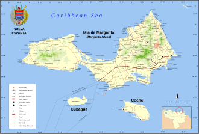
Lugares paradiciacos de la Isla de Margarita
-
Playa El Yaque
Playa El Yaque es uno de los destinos más populares en Isla Margarita, Venezuela. Es una larga playa de arena blanca con aguas cristalinas, tranquilas y poco profundas. Además, los fuertes vientos hacen de Playa El Yaque uno de los mejores lugares del mundo para practicar kitesurf y windsurf.
Las aguas poco profundas también lo hacen ideal para familias con niños o personas que solo quieren venir a relajarse.
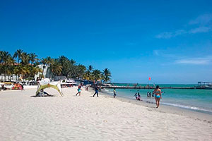
-
Playa El Agua
Playa El Agua es una de las playas más hermosas de Isla Margarita, Venezuela. Ubicada en la costa norte de la isla, esta impresionante playa es conocida por su larga extensión de arena blanca y suave y aguas cristalinas que son perfectas para nadar, tomar el sol y practicar deportes acuáticos.
La playa también es conocida por su ambiente animado y sus amables lugareños. Hay varios restaurantes y bares a lo largo de la playa que sirven deliciosos mariscos y refrescantes cócteles.
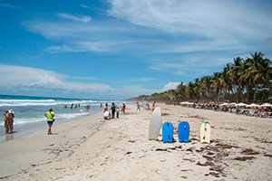
-
Playa Parguito
Playa Parguito se encuentra en la costa este de la isla Margarita. Esta hermosa playa cuenta con aguas cristalinas, arena blanca y suave y un ambiente relajado.
La playa es conocida por sus olas perfectas, que atraen a surfistas de todo el mundo.
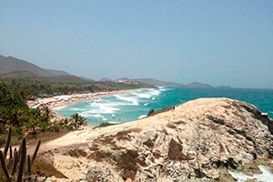
-
Playa Punta Arenas
Punta Arenas forma el extremo suroeste de Isla Margarita. Punta Arenas es un verdadero paraíso idílico, formado por dos costas que tienen forma de punta triangular, con aguas tranquilas y cristalinas en tonos turquesa, poco profundas y con arena blanca muy fina y suave.
Observar el atardecer en Punta Arenas ofrece una experiencia inolvidable.
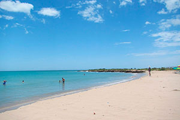
-
Isla De Coche
La isla de Coche es un popular destino turístico idílico con sus aguas cristalinas y playas de arena blanca. La Isla de Coche es ideal para aquellos que buscan relajarse, o disfrutar de actividades y deportes acuáticos.
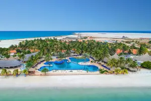
-
Isla de Cubagua
Cubagua es una isla única. Es una isla pequeña y desierta de aguas cristalinas y playas de arena blanca. Es la escapada perfecta para relajarse lejos de la civilización, hacer snorkel y disfrutar del sol y el mar, y pasar un buen rato con ron y BBQ.
-
Islas Los Frailes
Las Islas Los Frailes es un paraíso para el buceo y el esnórquel, frente a la costa este de la Isla de Margarita. Puede esperar ver una serie de grandes animales marinos como barracudas, tortugas marinas, pulpos.
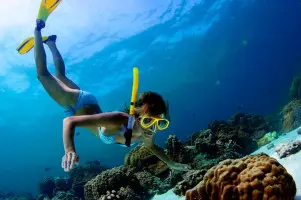
-
Basílica Nuestra Señora Del Valle
La Basílica Nuestra Señora Del Valle es una magnífica iglesia ubicada en el pueblo de El Valle del Espiritu Santo en la isla de Isla Margarita, Venezuela. Es un destino popular tanto para peregrinos religiosos como para turistas, con su impresionante arquitectura y diseño ornamentado.
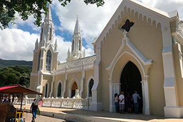
-
Castillo de Santa Rosa - Asuncion
El Castillo de Santa Rosa es una fortaleza histórica ubicada en Asunción y es una de varias fortalezas que demuestran la herencia colonial de Margarita.
Uno de los aspectos más destacados del Castillo de Santa Rosa es la impresionante vista desde sus murallas.
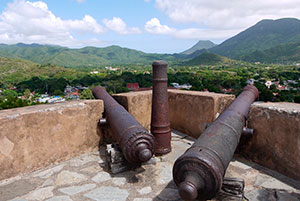
-
Castillo San Carlos de Borremeo - Pampatar
El Castillo de Pampatar es una fortaleza histórica con vista a la bahía de Pampatar y al mar, proporcionando un punto de vista estratégico para defender la Isla de Margarita de los piratas y otros invasores.
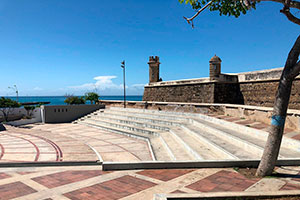